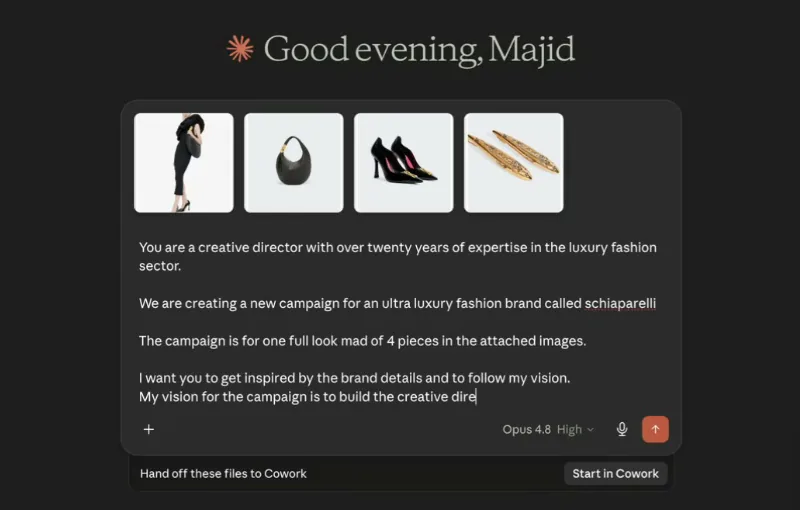
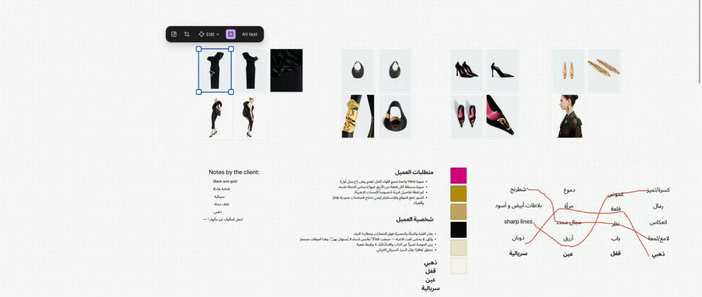
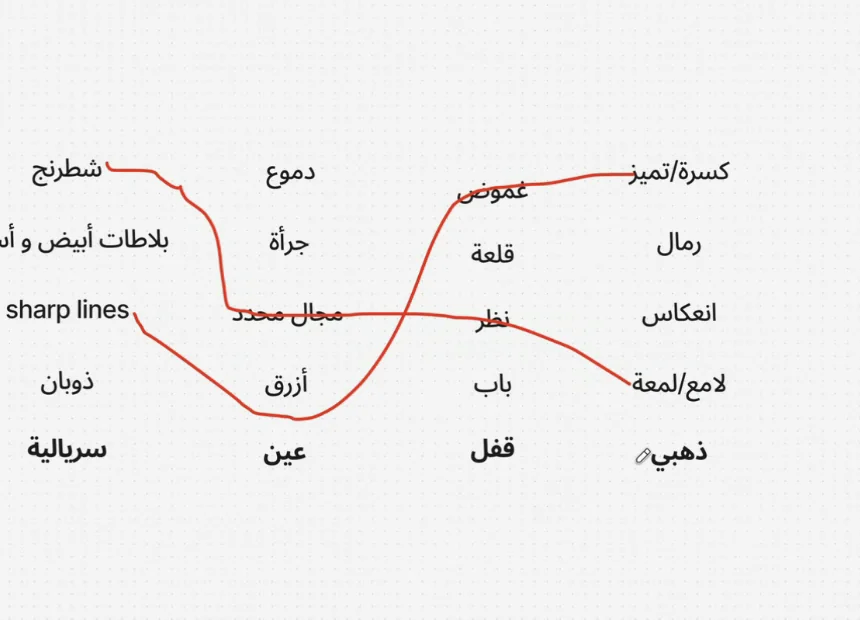
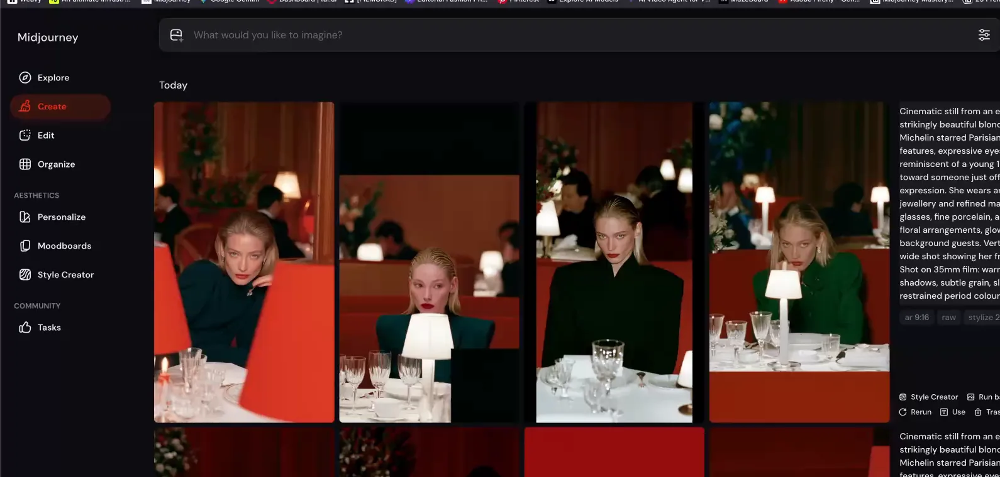
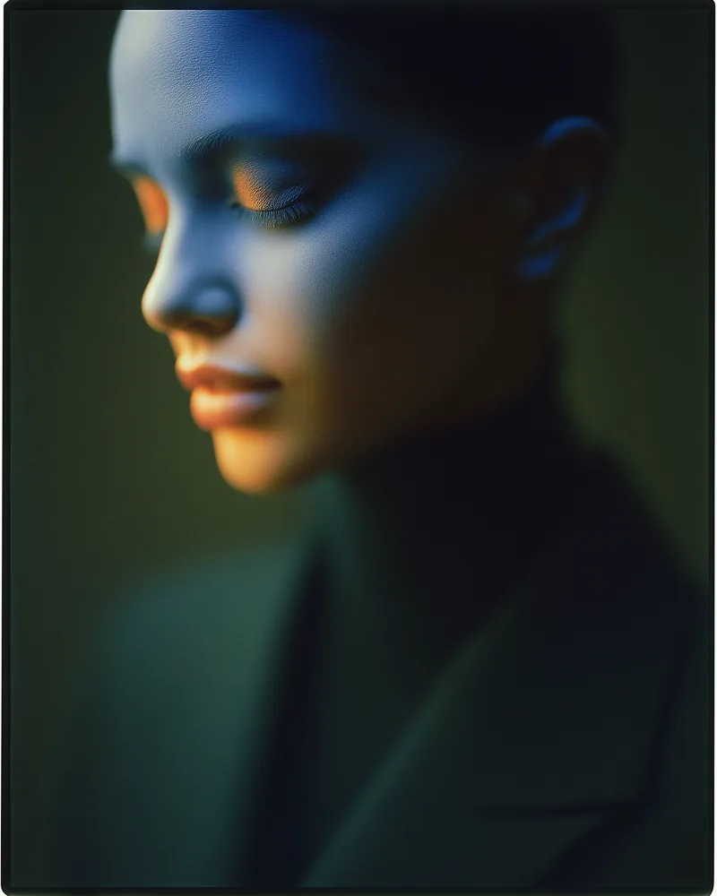
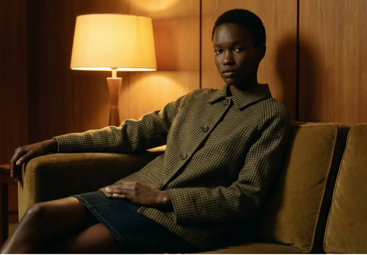
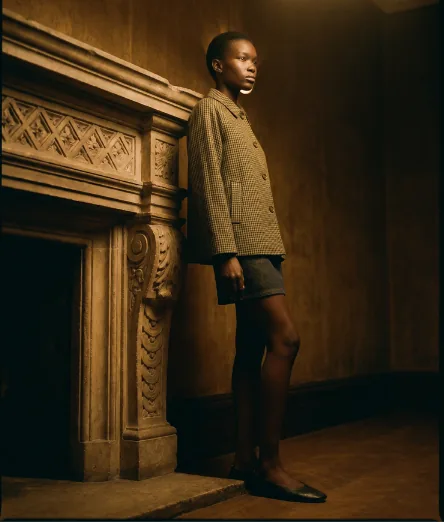
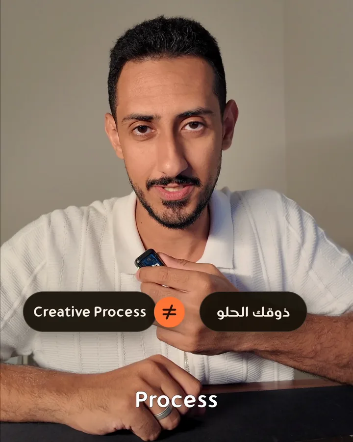
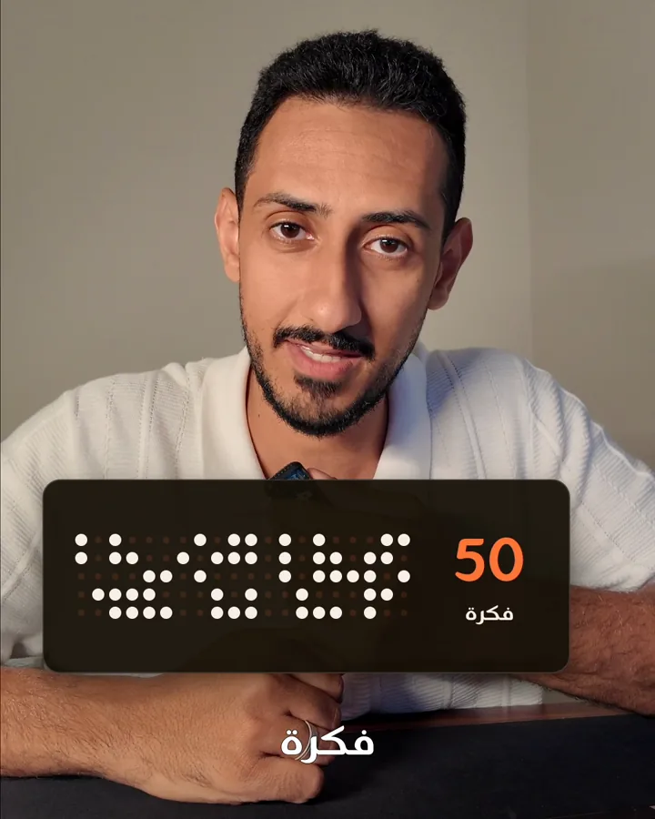
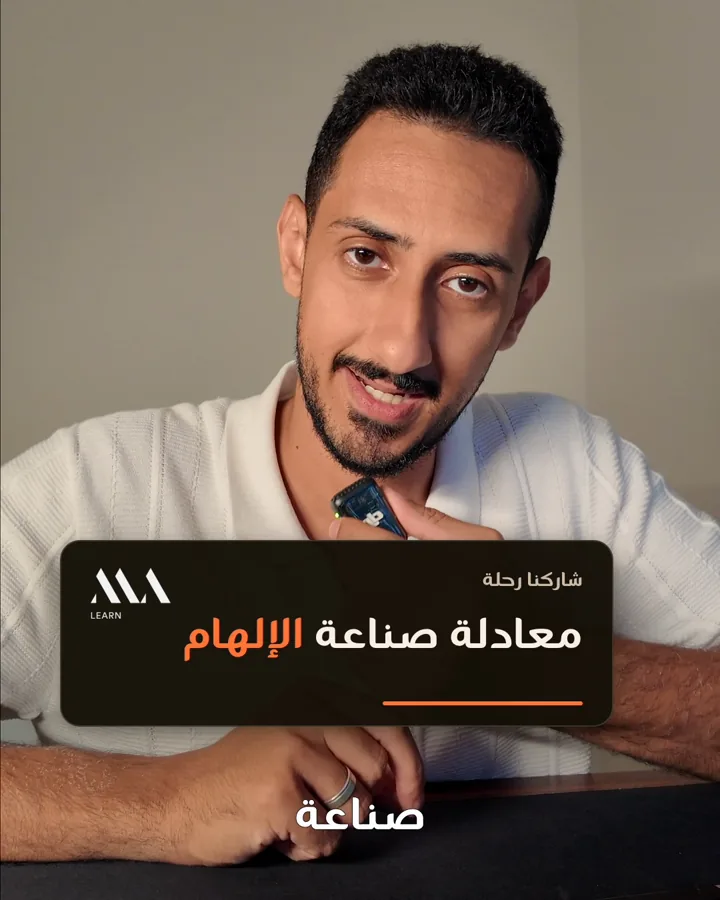

ماستركلاس
Figma Weave
تربط فيه أدواتك في سير عمل واحد، من الفكرة إلى التسليم.
باختصار: بعد ١٦ سنة في العمل الإبداعي، استقرّ عملي على ست أدوات، لكلٍّ منها دور واضح لا تؤديه غيرها. يدير Claude أعمالي كلها، وأفكّر في FigJam، وأطوّر المفهوم في Midjourney، وأنتج الصور في Figma Weave، وأحرّر الفيديو في DaVinci Resolve، وأصنع الموشن جرافيك في HyperFrames.
كل أداة هنا تختصر عليّ عملاً طويلاً، لكنّ القرار الإبداعي يبقى لي. فالذكاء الاصطناعي مساعد، فإذا صار هو من يحدد لك ما تفعل، فقد أصبح مديرك.
يدير كل شيء في أعمالي.

أين القيمة؟ ليست في إجابة واحدة، بل في مساعد يعرف البريف والسياق في كل محادثة، فلا أبدأ من الصفر في كل مرة.
افتح Claude ←أداتي الرئيسية للعصف الذهني والتفكير الإبداعي.


لوحة من إحدى جلسات الورشة، عملنا فيها على بريف تدريبي استخدمنا فيه علامة Schiaparelli مثالاً، وهي ليست عميلاً لنا.
لماذا أبدأ من هنا؟ لأن الصورة القوية تبدأ بقرار مكتوب، لا ببرومبت.
افتح FigJam ←أفضل أداة لتطوير المفهوم.


صورتان من أعمالي في Midjourney، بعد رفع الدقة في Magnific.
أين تنتهي مهمته؟ Midjourney للمظهر، و Figma Weave للتعديل. فإذا احتجت إلى إضافة منتج أو قطعة ملابس، نقلت الصورة إلى Weave.
افتح Midjourney ←الاستوديو الرئيسي وخط الإنتاج لتوليد الصور.


نظام واحد في Figma Weave، والصورتان من نتائجه: العارضة والملابس نفسها في مشهدين.
معظم العقد ليست ذكاءً اصطناعياً: فالقص وتصحيح اللون والأقنعة عمليات، والتوليد خطوة واحدة بينها. وبهذا أتحكم في النتيجة بدلاً من إعادة التوليد مرة بعد مرة.
افتح Figma Weave ←وجهتي الأولى لمونتاج الفيديو.
هذا هو الخط الزمني الفعلي لمقطعي «ذوقك الحلو لحاله ما يكفي»، مرسوماً من بيانات المونتاج نفسها.
لماذا أصدّر نسخة رئيسية؟ لأن كل منصة تضغط الفيديو بطريقتها، فأحتفظ بنسخة ProRes عالية الجودة وأستخرج منها ما أنشره.
افتح DaVinci Resolve ←للموشن جرافيك، وللمونتاج أحياناً.



طبقات موشن حقيقية من المقطع نفسه، صُنعت في HyperFrames ثم وُضعت فوق المونتاج في DaVinci Resolve.
لماذا أداتان؟ DaVinci Resolve للقصة والصوت واللون، و HyperFrames للحركة. وأحياناً أنجز فيها المونتاج كله حين يكون الفيديو قائماً على الرسوم.
افتح HyperFrames ←| الأداة | أفتحها عندما |
|---|---|
| Claude | في كل مرحلة، من البريف إلى التسليم. |
| FigJam | أبدأ مشروعاً جديداً وأحتاج إلى التفكير. |
| Midjourney | أريد اختبار فكرة أو تطوير مفهوم. |
| Figma Weave | يحين وقت إنتاج الصور النهائية. |
| DaVinci Resolve | يصل الفيديو إلى مرحلة المونتاج. |
| HyperFrames | يحتاج الفيديو إلى موشن جرافيك. |

هذه الأدوات جزء من طريقة عملي، والقيمة الحقيقية في الطريقة نفسها. في معادلة صناعة الإلهام 2.0 تتعلّم سير عمل إبداعياً من ٧ مراحل، يحوّل رؤيتك إلى صور وفيديوهات بنتائج قوية، مهما تغيّرت الأدوات.
تربط فيه أدواتك في سير عمل واحد، من الفكرة إلى التسليم.
دروس قصيرة، كل درس عن خاصية واحدة داخل الأداة.
أداتنا للعصف الذهني، نفكّر عليها قبل أي إنتاج.
تتعلّم الأدوات في الماستركلاسات، لتبقى جلسات البث المباشر للقرار الإبداعي الذي يأتي قبل أي أداة.
الصور والمقاطع من أعمالي ومن جلسات الورشة، وواجهات الأدوات وأسماؤها لأصحابها. وردت علامة Schiaparelli في بريف تدريبي فقط، ولا تربطنا بها أي علاقة. الروابط مباشرة ولا تتضمن أي عمولة.
من ماجد عنقاوي · malearnsa.com · @majidangawi